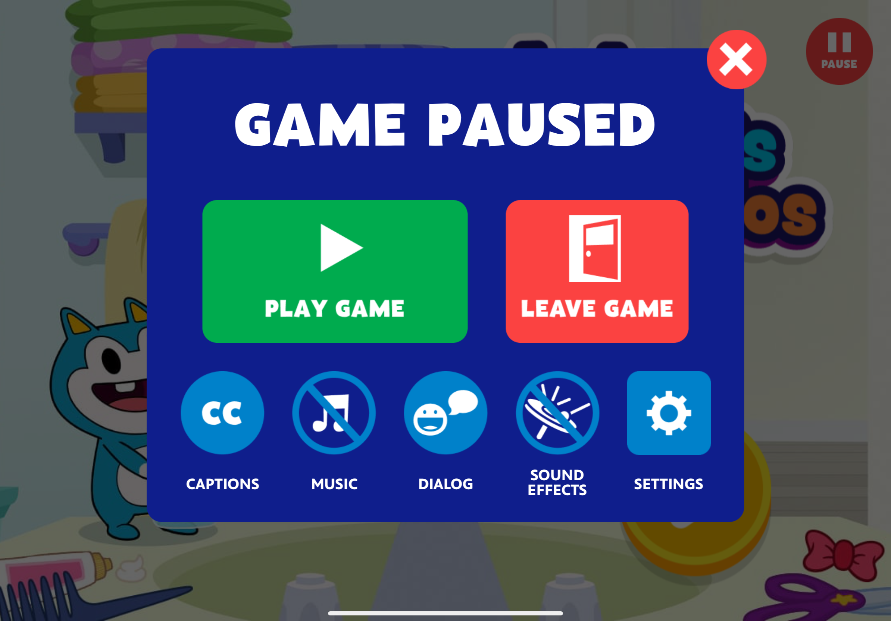
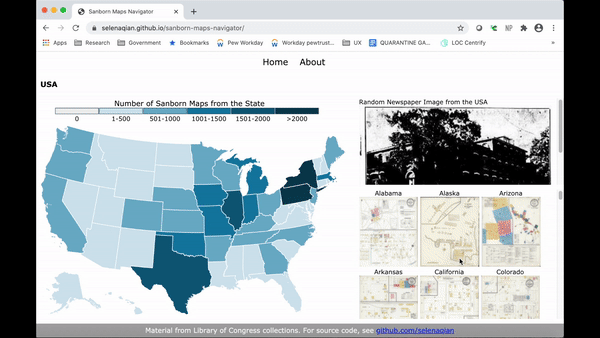
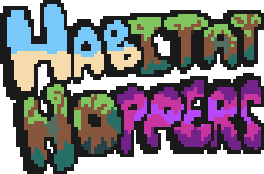

Code
PBS KIDS Games App
I've worked at PBS KIDS since October 2021, as an engineer on the newly-established Games Squad. I started out doing small bugfixes and minor changes to GraphQL queries, then quickly got my feet under me and started developing new features, implementing themes, and automating workflows. I became our team's subject matter expert in the Universal Analytics to Google Analytics 4 migration and am now leading work on a new, modular, content management system-driven landing page for the redesigned Games App in React Native.
Pause Menu

Accessibility features now exposed to the kid or grown-up during gameplay in Games App.
Prior to my building this feature, the Games App did not have a standard way to control individual sound channels, or to pause a game other than backgrounding the app or closing the device. This new menu provides those new accesibility capabilities, and the goal in the future is to continue to expand upon the available features. This menu has been many years in development, with a number of design iterations and playtesting rounds to see the way that kids and grown-ups interacted with the menu, what icons made sense, what areas were attractive, and so on.
Jelly, Ben, and Pogo Game of the Day
Featured animation in the top section of the Games App that encourages kids to explore a selected game.
I implemented the animation using GSAP and collaborated with the design team to fine-tune the timing and feel of the interaction. The game card wiggles to encourage curiosity, and the stickers pop away after being clicked. If some stickers are clicked, then the whole section is not touched for a few seconds, the rest of the stickers "sweep" off. Once all the stickers are gone and the entire game card is revealed, that triggers the final bounce and "Game of the Day!" audio.
SpringRoll Game Tooling Suite
GitHub pageAn ecosystem for building educational, accessible HTML5 games. This is an open-source suite of tools for game developers intended to standardize and allow for distribution across multiple platforms. The repositories are largely maintained by PBS KIDS developers (including me!), with suggestions and contributions from our game developer network.
Sanborn Maps Navigator
Developed for Junior Fellowship at the Library of Congress in Summer 2020. Web interface for navigating through the Sanborn Fire Insurance Maps collection and discovering more about the history of various places. Combines the Sanborn Maps Collection with photos in the Newspaper Navigator dataset (visual content pulled from Chronicling America historic newspapers collection using machine learning).

My goals for the project were to:
- Connect a wider audience to the vast collection of Sanborn Maps by creating a more intuitive navigation tool.
- Introduce an element of serendipity and encourage discovery via the connection to the time and place when these maps were created.
I developed the site using HTML, CSS, and JavaScript, specifically the D3 library. I used Python 3 and Jupyter notebooks to gather the data behind the project from the Library's API.
Spatial Reasoning Education in AR
(Repository is not public due to potential copyright concerns with the activities)
Developed as part of an independent study project for Fall 2020. An iOS app with augmented reality that aims to simulate the in-person experience through physical interaction with virtual objects to improve skills in spatial reasoning.

This project considered an approach to close the gender gap in spatial reasoning cognitive skills through new technology. I also aimed to examine education in the time of social distancing and how we can shift education to think about the online, remote experience and build better solutions for our current situation as well as take advantage of the affordances that would not be possible in other forms.
I created the 3D objects in Maya and built the app using Unity, writing code in C#. The objects draw inspiration from the revised Purdue Spatial Visualization Test: Rotations section. I reached out to the professor who worked on that test to better understand evaluation of spatial reasoning skills. I planned the code structure with flexibility in mind, and once the core components were complete, I conducted two rounds of limited user testing to find pain points in the user experience and improve the app based on the feedback.
I could see this project extending to include more exercises, as well as a "teacher" mode that allows educators to create their own spatial reasoning exercises and send them to their students virtually. This work builds on my previous experience as part of a Bass Connections project focused on problem-based learning and spatial reasoning to improve middle-school aged girls’ confidence in math and STEM in order to lessen the gender gap in those fields.
AR Storytelling
GitHub respositoryDeveloped as final project for Immersive Virtual Worlds class in Spring 2020. Proof-of-concept that aims to bring a non-linear, physically interactive story experience to Goldilocks and the Three Bears.
The app prompts users to add a character (Goldilocks or the three bears) and a scene (forest, bridge, chairs, porridge, beds) image into the physical space. The 3D models pop up over those images and prompt further interaction, based on what they are. This then loops back around to the main prompt, eventually leading to a final outcome.
Habitat Hoppers Game
Developed as final project for Unity 3D and Interface Design class in Fall 2019. 2-person platformer with 3D map elements. Inspired by games like Fireboy and Watergirl, Super Mario Bros., Doodle Jump.

The game is a 2D platformer, with a 3D element for the level map. The storyline follows two friends, Square and Circle, working together to find a third friend, Triangle, who has been lost somewhere on an island. The two embark on a perilous journey across different terrains to find their friend.
Along with writing the C# scripts, I also created all of the pixel art assets. The music comes from free online resources.
Covid Warrior Game
GitHub respositoryDeveloped as an independent project in 2021 with a team of 3 developers. 2D platformer built in Unity with math questions pulled from a mongoDB database.
I created the bulk of the game logic, including the player movement, signup and login, and the connection of the mongoDB question database to the game through webhooks. I also collaborated with other students on a game design document detailing the game's goals and the gameplay flow.
Duke Chronicle First Year Survey 2023
Created for The Chronicle, Duke's student newspaper. Interactive data visualizations based on data from survey of first-year students in the class of 2023. Built using the Google Charts API.